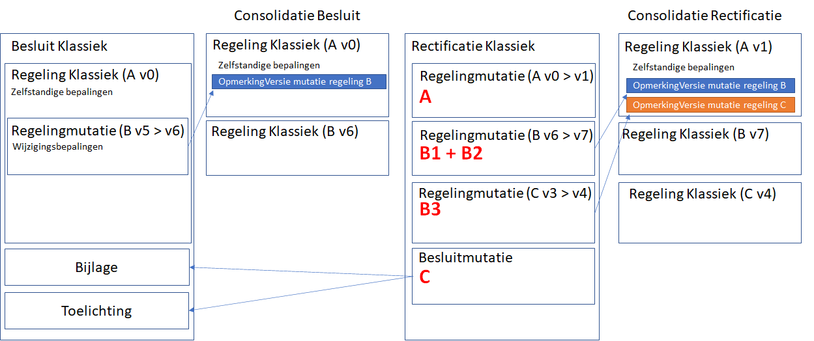

Rectificatiescenario's
Met een rectificatie zal vaak maar één of hooguit enkele aspecten van een besluit gecorrigeerd moeten worden. Afhankelijk van welk aspect gecorrigeerd moet worden, zal de rectificatie verschillend opgesteld worden:
een regelingcorrectie,
een regelingmutatiecorrectie,
een besluitcorrectie of
een correctie van een meegeleverd informatieobject.
Per tekstmodel en per categorie wordt hier een aantal scenario's gegeven waarbij toegelicht wordt waaruit de rectificatie in betreffende situatie bestaat.
BesluitCompact
Scenario A - Regelingcorrectie
In dit scenario wordt een (initiële) regeling als onderdeel van het besluit gerectificeerd:
Scenario B - Regelingmutatiecorrectie
In dit scenario wordt een RegelingMutatie gerectificeerd.
Scenario C - Besluitmutatie
In dit scenario worden onderdelen van BesluitCompact gecorrigeerd. Dit zijn BesluitMutaties, deze correcties kunnen niet met een RegelingMutatie gerectificeerd worden:
BesluitKlassiek
Omdat het tekstmodel van een BesluitKlassiek anders gestructureerd is dan BesluitCompact, moeten vergelijkbare correcties soms met RegelingMutatie in plaats van met BesluitMutatie gecodeerd worden. De rectificatie van een BesluitKlassiek kan de volgende type correcties bevatten:
A. Regelingmutaties op de zelfstandige bepalingen uit de RegelingKlassiek uit het BesluitKlassiek
B. Regelingmutaties op de wijzigingsbepalingen uit de RegelingKlassiek:
corrigeren van wijzigingsbepalingen
verwijderen van wijzigingsbepalingen
toevoegen van wijzigingsbepalingen
C. Besluitmutaties op de delen van het besluitklassiek buiten regelingklassiek

Scenario A - Regelingcorrectie
Naast aanpassingen in de wijzigingsbepalingen in een RegelingKlassiek:
moeten ook correcties in de zelfstandige bepalingen m.b.t. inwerkingtredingsdatum, RegelingOpschrift en Ondertekening in RegelingKlassiek met een Regelingmutatie gerectificeerd worden.
Scenario B - Regelingmutatie-correctie
Corrigeren van wijzigingsbepalingen (B1 & B2):
Een speciale situatie (B3) is de rectificatie van een BesluitKlassiek waarin een extra wijzigingsbepaling moet worden opgenomen voor een regeling die in de oorspronkelijke codering van het besluit nog niet werd gewijzigd. Alleen in deze situatie mag een WijzigArtikel gebruikt worden binnen RegelingMutatie, zodat de OpmerkingVersie in de consolidatie na rectificatie opgenomen kan worden. Zie het XML-voorbeeld onder B-Rectificatie met een uitgebreide beschrijving.
Scenario C - Besluitmutatie
Voor BesluitKlassiek is een Besluitmutatie nodig voor rectificaties in de Bijlage(s) en/of de Toelichting bij het besluit. Zie het XML voorbeeld onder Scenario C.
Informatieobjecten
Ook in de met het besluit meegeleverde informatieobjecten kunnen correcties nodig zijn. Hier voorbeelden van een correctie van een geografisch informatieobject(GIO):